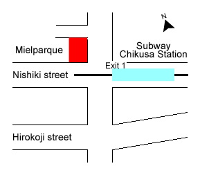
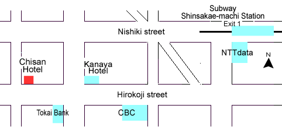
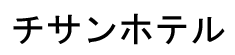

How to get Accommodations
From Nagoya Airport to Nagoya Station
- Buy a ticket of Airport Bus
bound for "Nagoya Station (Mei-tetsu Bus Center)".
Ticket costs 870 yen.
It takes about 30 minutes to bus terminal in Nagoya Station.
- Go to subway station ("Higashiyama line")
near an exit of Nagoya station
which is in the oposite side to Shinkansen exit.
From bus terminal to subway station it takes several minutes
by walking through the building of "Mei-tetsu Melsa".
The mark of Subway and Logo of Higashiyama line are --> .
From Nagoya station to Hotels

How to get Mielparque Nagoya
- Take subway Higashiyama line (bound for "Fujigaoka")
and get off at "Chikusa". (It will take about 12 minutes
from Nagoya station.)
(See Nagoya city subway map.)
- After getting off at Chikusa,
pass the ticket gate and
go up to the ground through Exit No.1.
You will find Mielparque in front of you.
How to get Chisan Hotel Nagoya-Sakae
- Take subway Higashiyama line (bound for "Fujigaoka")
and get off at "Shinsakae-machi". (It will take about 10 minutes
from Nagoya station.)
(See Nagoya city subway map.)
Follow the map
from Shinsakae-machi to Chisan Hotel. It takes about 10 minutes by walk.

- After getting off at Shinsakae-machi,
pass the ticket gate and go up to the ground through Exit No.1.
- Then you will come to a big crossroad and turn to the left there.
Walk in the south direction along the street, looking the building of "NTT data"
on the left, about 1 minute.
- You will come to another big crossroad in a moment. Then, turn to the right
and walk along the "Hirokoji dori(street)" in the east direction about
5 minutes, looking the "CBC Hall" building on the left.
- Then you will come to a big crossroad, again. You find Kanaya Hotel on the
right, and pass "Tokai Bank"(on the left) and go straight on the street.
- After a few minutes more, you can find "Chisan Hotel Nagoya-Sakae"
at the right hand, at the corner of a crossroad. The entrance is by the shop
"LAWSON". The name of Hotel is shown only in Japanese. (See the character below.)

How to get Guest House
- Take subway Higashiyama line (bound for "Fujigaoka")
and get off at "Motoyama".
(See Nagoya city subway map.)
- Follow the instruction given in 'How to get Symposion' to get to
Motoyama station to Nagoya University.
We have three guest houses in Higashiyama campus
of Nagoya university.
- Symposion
- Green Salon Higashiyama
- Staff Club (Shokuin Kaikan)
You can get the key of your room as well as the campus map for Guest houses,
at Hotel "Mielparque Nagoya" on 14 October, where the registartion desk
will open from 12:00 to 17:00. After 17:00, participants who will stay
at guesthouse in Nagoya university are required to come to Symposion
Restaurant directly until 19:00. The room key of the guesthouse will
be given at the place of reception.
Participants who cannot arrive at Nagoya university before 19:00
are required to inform us until the day.
Last updated: Oct.10 2001
{kind=link}
{kind=link}